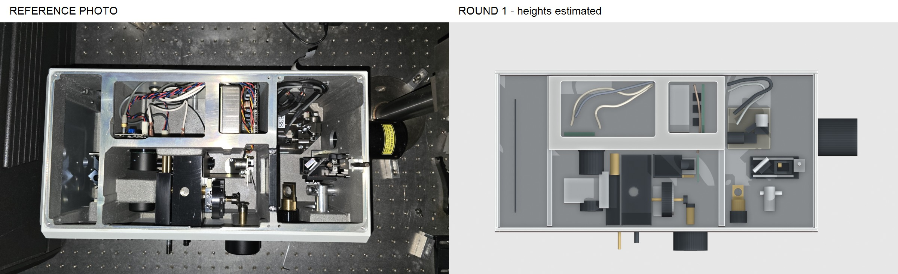
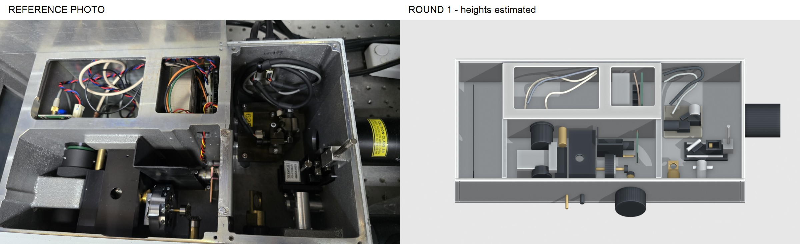
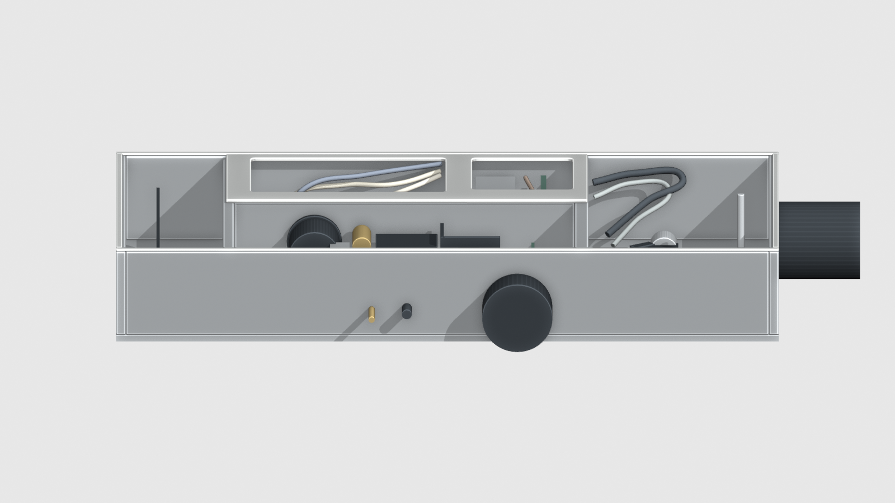
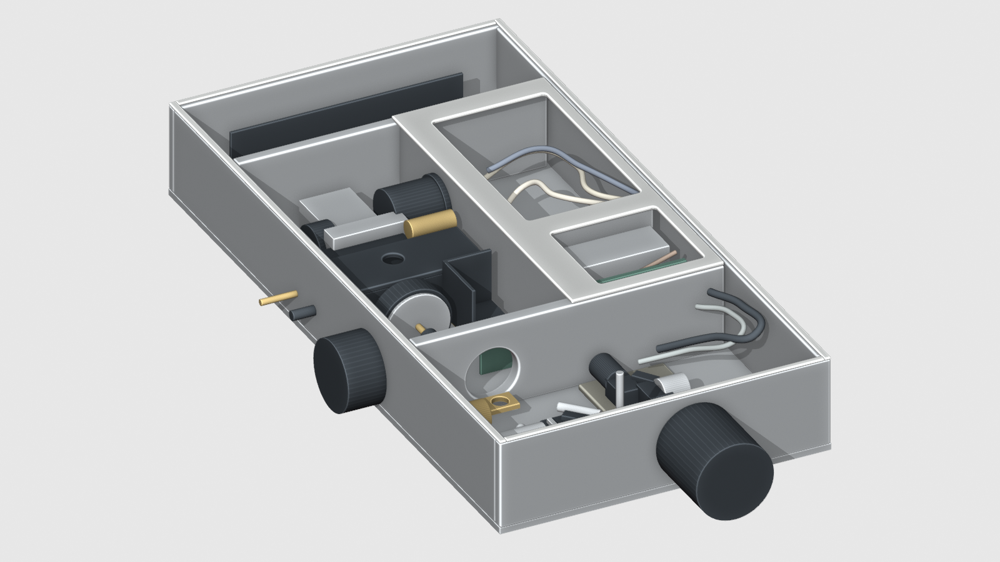
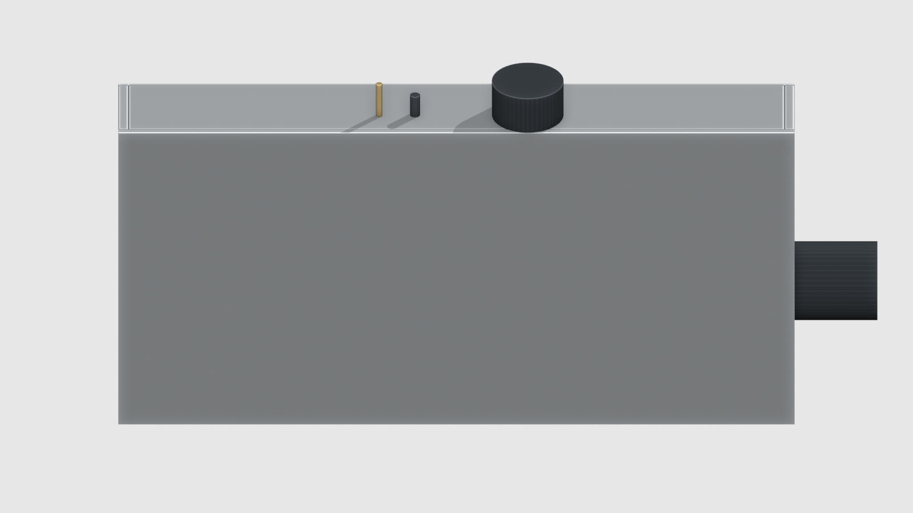
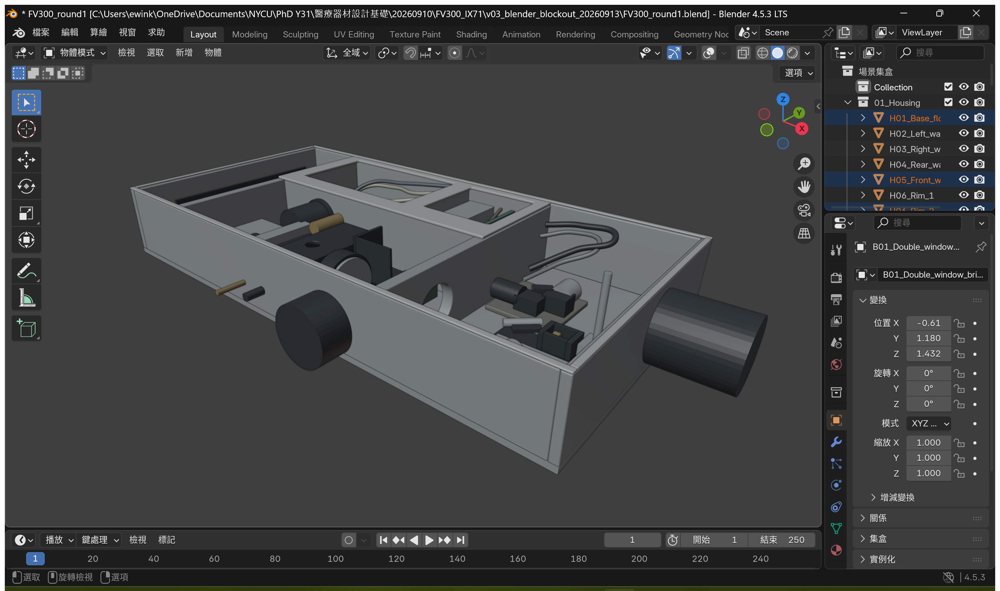

Blender 原始模型 · 79 件分件表 · 完整核對紀錄
四張內構照片重新判讀，獨立重建。所有高度未量測；外框寬 10 任意單位。右側立桿改為垂直，中央長板保留開口折邊。IX71 本輪未建。
近似相機角度，非精確配準。先看外框長寬、三大區域和主要機構位置。

相機視角近似，原照有裁切；用來核對部件方向與相對高低。





外框平面約 2:1 是否合理？左槽／中央／右側比例是否正確？右側立桿方向及中央折板形狀是否接近？目前外框深度與板件高度是否過高或過低？
仍簡化：鑄造支座、夾座、線束、齒輪；缺正側面、底面和尺寸基準。這一輪到此停止，等比例確認後再做細節。